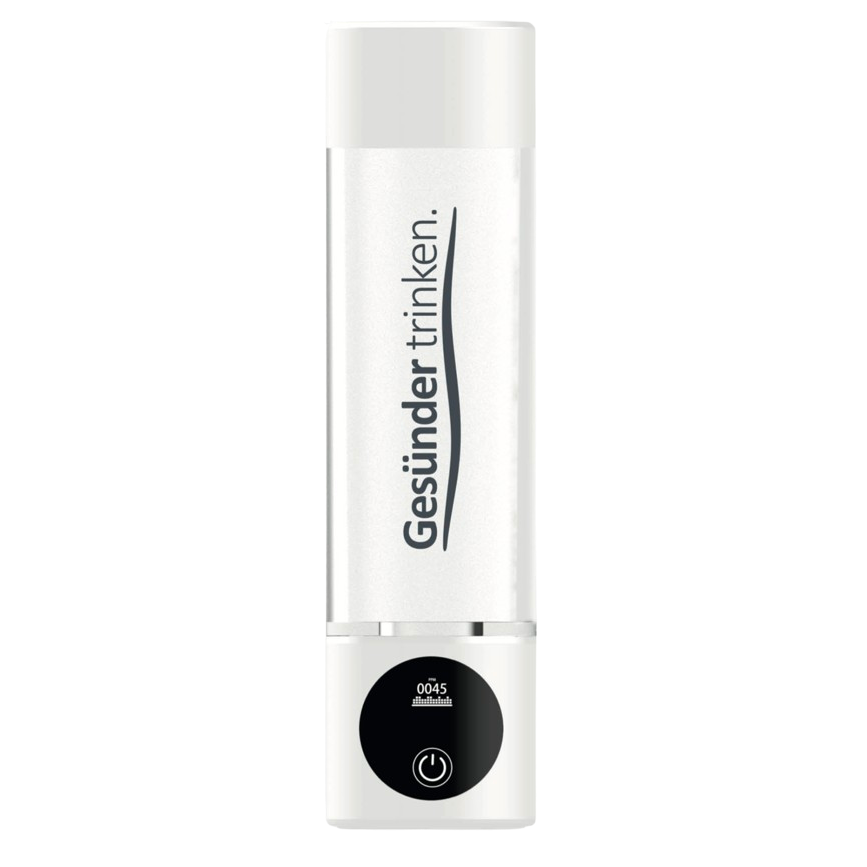

Marke: WALUTECHydrogen Bottle
WALUTEC Hydrogen Water Bottle
Kompakte Hydrogenflasche mit OLED-Anzeige, zwei Programmlängen und USB-C-Ladung.
ca. €199
Technische Daten
| H₂-Konzentration | 1.600–3.000 ppb laut Anbieter |
| Programme | 5 oder 10 Minuten |
| Volumen | 0,28 l |
| Material | Tritan™ und ABS |
| Anzeige | OLED: Akku, Restzeit und H₂-Wert |
| Laden | USB-C, integrierter Akku |
| Preisquelle | 850 AED; gerundet in Euro dargestellt |